19 Probability distributions
So far we have talked about probability of events, and we have in mind measurements, parameter values and hypotheses as the events. We have a bit of a problem, though, if the sample space consists of real numbers, which we often encounter in our experiments and modeling. The probability of getting a single real value is identically zero. This is my motivation for introducing probability distributions, but the concept is more general and has much more utility than just dealing with sample spaces containing real numbers. Importantly, probability distributions provide the link between outcomes in the sample space to probability. Probability distributions describe both discrete quantities (like integers) and continuous quantities (like real numbers).
Though we cannot assign a nonzero the probability for an outcome from a sample space containing all of the real numbers, we can assign a probability that the outcome is less than some real number. Notationally, we write this as
\[\begin{aligned} P(\text{having outcome that is}\le y) = F(y). \end{aligned} \tag{19.1}\]
The function \(F(y)\), which returns a probability, is called a cumulative distribution function (CDF), or just distribution function. It contains all of the information we need to know about how probability is assigned to \(y\). A CDF for a Normal distribution is shown in the left panel of the figure below.

Related to the CDF for a continuous quantity is the probability density function, or PDF. The PDF is given by the derivative of the CDF,
\[\begin{aligned} f(y) = \frac{\mathrm{d}F(y)}{\mathrm{d}y}. \end{aligned} \tag{19.2}\]
Note that \(f(y)\) is not the probability of outcome \(y\). Rather, the probability that of outcome \(y\) lying between \(y_0\) and \(y_1\) is
\[\begin{aligned} P(y_0\le y \le y_1) = F(y_1) - F(y_0) = \int_{y_0}^{y_1}\mathrm{d}y\,f(y). \end{aligned} \tag{19.3}\]
Note that with this definition of the probability density function, satisfaction of the axiom that all probabilities sum to zero (equivalently stated as \(F(y\to\infty) = 1\)) necessitates that the probability density function is normalized. That is,
\[\begin{aligned} \int_{-\infty}^\infty \mathrm{d}t\, f(y) = 1. \end{aligned} \tag{19.4}\]
Conversely, for a discrete quantity, we have a probability mass function, or PMF,
\[\begin{aligned} f(y) = P(y). \end{aligned} \tag{19.5}\]
The PMF is a probability, unlike the PDF. An example of a CDF and a PMF for a discrete distribution are shown in the figure below. In this example, \(n\) is the outcome of the roll of a fair die (\(n\in\{1,2,3,4,5,6\}\)).

19.1 Joint and conditional distributions and Bayes’s theorem for PDFs
We have defined a PDF as \(f(x)\), that is, describing a single variable \(x\). We can have joint distributions with a PDF \(f(x, y)\).
We may also have conditional distributions that have PDF \(f(x\mid y)\). This is interpreted similarly to conditional probabilities we have already seen. \(f(x\mid y)\) is the probability density function for \(x\), given \(y\). As similar relation between joint and conditional PDFs holds as in the case of joint and conditional probabilities.
\[\begin{aligned} f(x\mid y) = \frac{f(x,y)}{f(y)}. \end{aligned} \tag{19.6}\]
That this holds is not at all obvious. One immediate issue is that we are conditioning on an event \(y\) that has zero probability. We will not carefully derive why this holds, but state it without proof.
As a consequence, Bayes's theorem also holds for PDFs, as it does for probabilities.1
\[\begin{aligned} f(\theta\mid y) = \frac{f(y\mid \theta)\,f(\theta)}{f(y)}. \end{aligned} \tag{19.7}\]
Notationally in this course, we will use \(f\) to describe a PDF or PMF of a random variable and \(g\) to describe the PMF or PDF of a parameter or other logical conjecture that is not measured data or a random variable. For example, \(f(y \mid \theta)\) is the PDF for a continuous measured quantity and \(g(\theta)\) is the PDF for a parameter value. In this notation, Bayes’s theorem is
\[\begin{aligned} g(\theta\mid y) = \frac{f(y\mid \theta)\,g(\theta)}{f(y)}. \end{aligned} \tag{19.8}\]
Finally, we can marginalize probability distribution functions to get marginalized PDFs.
\[\begin{aligned} f(x) = \int \mathrm{d}y\,f(x,y) = \int\mathrm{d}y\,f(x\mid y)\,f(y). \end{aligned} \tag{19.9}\]
In the case of a discrete distribution, we can compute marginal a marginal PMF.
\[\begin{aligned} f(x) = \sum_i\,f(x,y_i) = \sum_i f(x\mid y_i)\,f(y_i). \end{aligned} \tag{19.10}\]
19.2 Change of variables formula for continuous distributions
As a last note about probability distributions, I discuss the change of variables formula. Say I have a continuous probability distribution with PDF \(f_X(x)\). I have included the subscript \(X\) to denote that this is a PDF describing the variable \(X\). If I wish to change variables to instead get a continuous distribution in \(y=y(x)\), or \(f_Y(y) = f_Y(y(x))\), how do I get \(f_Y\)? We must enforce that the distributions be normalized;
\[\begin{align} \int \mathrm{d}x\, f_X(x) = \int \mathrm{d}y\, f_Y(y) = 1. \end{align} \tag{19.11}\]
Thus, we must have \(\left|\mathrm{d}y\,f_Y(y)\right| = \left|\mathrm{d}x\,f_x(x)\right|\). Equivalently, we have
\[\begin{align} f_Y(y) = \left|\frac{\mathrm{d} x}{\mathrm{d}y}\right|\,f_X(x). \end{align} \tag{19.12}\]
This is the change of variables formula.
19.2.1 Generalization to multiple dimensions
Generically, if we have a set of variables \(\mathbf{x}\) that are transformed into a new set of parameters \(\mathbf{y} = \mathbf{y}(\mathbf{x})\), then
\[\begin{align} f_Y(y) = \left|\frac{\partial(x_1, x_2, \ldots)}{\partial(y_1, y_2, \ldots)}\right|f_X(x), \end{align} \tag{19.13}\]
where the first factor on the right hand side is the Jacobian, which is the absolute value of the determinant of the Jacobi matrix,
\[\begin{aligned} \begin{align} \frac{\partial(x_1, x_2, \ldots)}{\partial(y_1, y_2, \ldots)} = \begin{pmatrix} \frac{\partial x_1}{\partial y_1} & \frac{\partial x_1}{\partial y_2} & \cdots \\ \frac{\partial x_2}{\partial y_1} & \frac{\partial x_2}{\partial y_2} & \cdots \\ \vdots & \vdots & \ddots \end{pmatrix} . \end{align} \end{aligned} \tag{19.14}\]
19.2.2 An example of change of variables
Imagine I have a random variable that is Exponentially distributed, such that
\[\begin{align} f_X(x) = \beta \, \mathrm{e}^{-\beta x}. \end{align} \tag{19.15}\]
Now saw that I want to rescale \(x\) so that I instead get a distribution in \(y = a x\). Here, \(g(x) = a x\) and \(g^{-1}(y) = y/a\). So, we have
\[\begin{align} f_Y(y) = \left|\frac{\mathrm{d}}{\mathrm{d}y}\,\frac{y}{a}\right|\,f_X(y/a) = \frac{1}{a}\,\beta\,\mathrm{e}^{-\beta y / a}. \end{align} \tag{19.16}\]
The distribution is again Exponential, but the rate has been rescaled, \(\beta \to \beta/a\). This makes sense; we have rescaled \(x\) by our change of variables, so the rate should be rescaled accordingly.
19.2.3 Another example of change of variables: the Log-Normal distribution
Now imagine I have a random variable that is Normally distributed and I wish to determine how \(y = \mathrm{e}^{x}\) is distributed.
\[\begin{align} f_X(x) = \frac{1}{\sqrt{2\pi \sigma^2}}\,\mathrm{e}^{-(x-\mu)^2/2\sigma^2}. \end{align} \tag{19.17}\]
Here, \(g(x) = \mathrm{e}^x\) and \(g^{-1}(y) = \ln y\). Again applying the change of variables formula,
\[\begin{align} f_Y(y) = \left|\frac{\mathrm{d}\,\ln y}{\mathrm{d}y}\right|\,f_X(\ln y) = \frac{1}{y\sqrt{2\pi \sigma^2}}\,\mathrm{e}^{-(\ln y-\mu)^2/2\sigma^2}, \end{align} \tag{19.18}\]
which is indeed the PDF of the Log-Normal distribution.
19.3 Probability distributions as stories
The building blocks of statistical models are probability distributions. Specifying a model amounts to choosing probability distributions that describe the process of data generation. In some cases, you need to derive the distribution based on specific considerations or your experiment or model (or even numerically compute it when it cannot be written in closed form). In many practical cases, though, your model is composed of standard probability distributions. These distributions have stories associated with them. That is, the mathematical particulars of the distribution follow from a description of a data generation process. For example, the story behind the Bernoulli distribution is as follows. The outcome of a coin flip is Bernoulli distributed. So in building models, if your data generation process matches the story of a distribution, you know that this is the distribution to choose for your model.
The Distribution Explorer is a useful tool to connect distributions to stories and obtain their PDFs/PMFs and CDFs, as well as syntax for usage in popular software packages. I encourage you to explore the Explorer!
This is very subtle. Jaynes’s book, Probability: The Logic of Science, Cambridge University Press, 2003, for more one these subtleties.↩︎